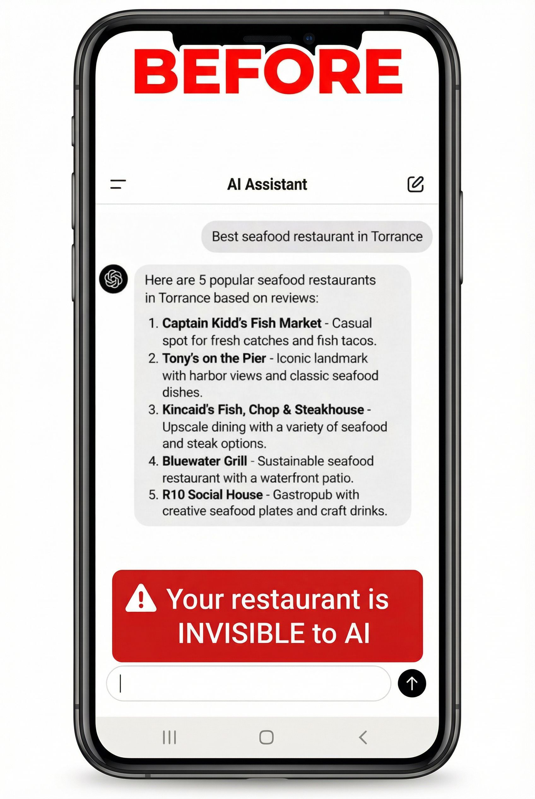
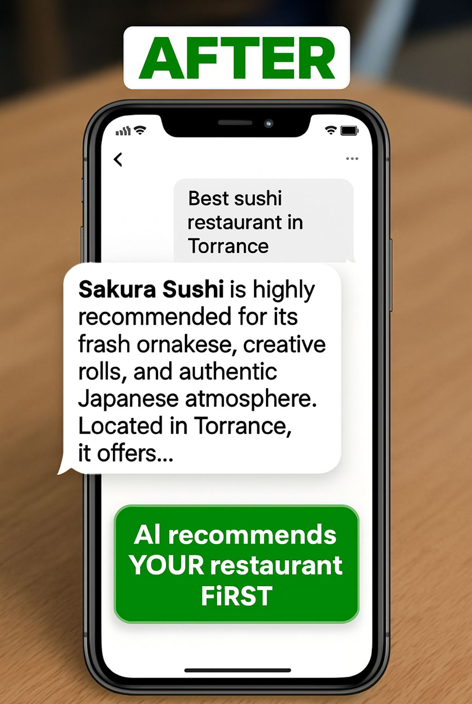

「South Bay でおすすめのレストランは？」と ChatGPT・Gemini・Siri に聞いたとき、 表示される答えはランダムではありません。構造化データ・キーワード・オンライン上の権威性の組み合わせで決まります。 構造化データ + GEO 最適化を実装した飲食店は、AI からの言及頻度が上がりやすくなる仕組みがあります。 ※AI への推薦頻度は、構造化データの充実度・キーワード権威性・レビューの更新速度に連動し得ます。結果は競合状況により異なります。

